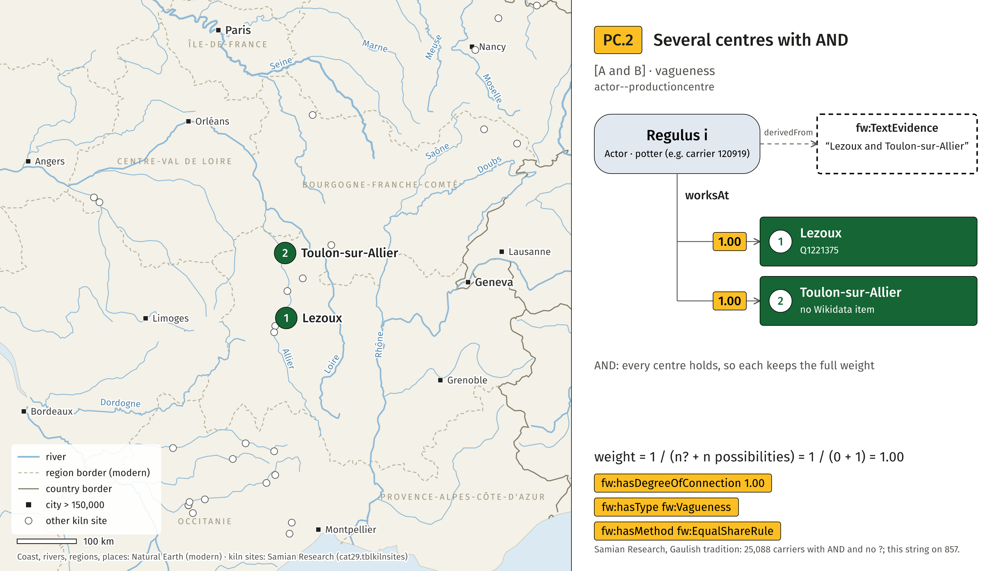
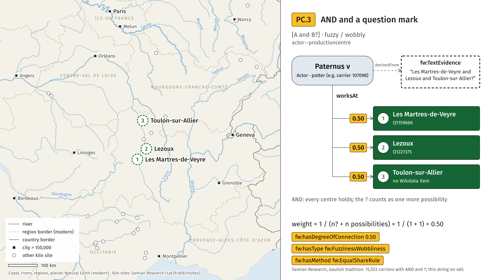
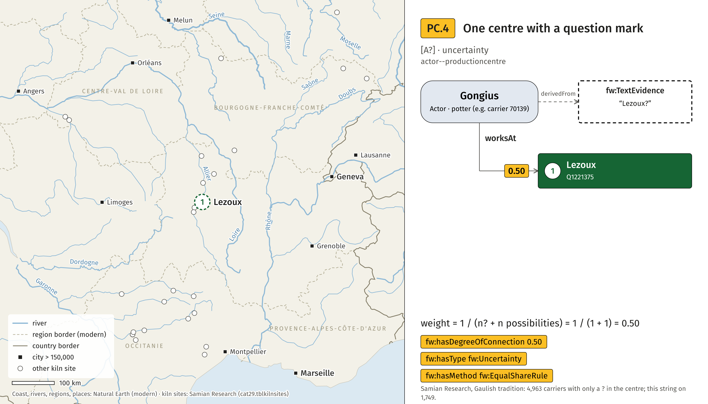
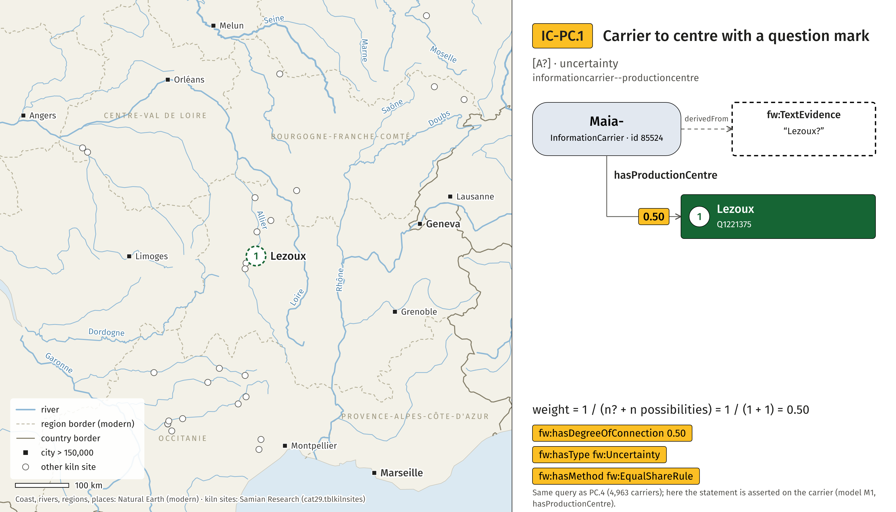

15/17 or 18 or 18/31 (Secundus v, id 156521); weight 0.33 per statement, fw:Vagueness, fw:EqualShareRule. SVGPotform and ProductionCentre, one figure per case. Examples from the Samian Research database.
15/17 or 18 or 18/31 (Secundus v, id 156521); weight 0.33 per statement, fw:Vagueness, fw:EqualShareRule. SVG
18/31? (Onnio-, id 103585); weight 0.50 per statement, fw:Uncertainty, fw:EqualShareRule. SVG
15/17 or 18 (R?) (Secundus ii, id 210355); weight 0.33 per statement, fw:FuzzinessWobbliness, fw:EqualShareRule. SVG
31 or 31R (any carrier); weight 0.50 per statement, fw:Vagueness, fw:EqualShareRule. SVG
Aspiran or Saint-Saturnin (Sem- i, id 132215); weight 0.50 per statement, fw:Vagueness, fw:EqualShareRule. SVG
Aspiran or Saint-Saturnin (Sem- i, id 132215); weight 0.50 per statement, fw:Vagueness, fw:EqualShareRule. SVG
Lezoux and Toulon-sur-Allier (Regulus i, id 120919); weight 1.00 per statement, fw:Vagueness, fw:EqualShareRule. SVG
Lezoux and Toulon-sur-Allier (Regulus i, id 120919); weight 1.00 per statement, fw:Vagueness, fw:EqualShareRule. SVG
Les Martres-de-Veyre and Lezoux and Toulon-sur-Allier? (Paternus v, id 107098); weight 0.50 per statement, fw:FuzzinessWobbliness, fw:EqualShareRule. SVG
Les Martres-de-Veyre and Lezoux and Toulon-sur-Allier? (Paternus v, id 107098); weight 0.50 per statement, fw:FuzzinessWobbliness, fw:EqualShareRule. SVG
Lezoux? (Gongius, id 70139); weight 0.50 per statement, fw:Uncertainty, fw:EqualShareRule. SVG
Lezoux? (Gongius, id 70139); weight 0.50 per statement, fw:Uncertainty, fw:EqualShareRule. SVG
Lezoux? (Maia-, id 85524); weight 0.50 per statement, fw:Uncertainty, fw:EqualShareRule. SVG
Lezoux? (Maia-, id 85524); weight 0.50 per statement, fw:Uncertainty, fw:EqualShareRule. SVG